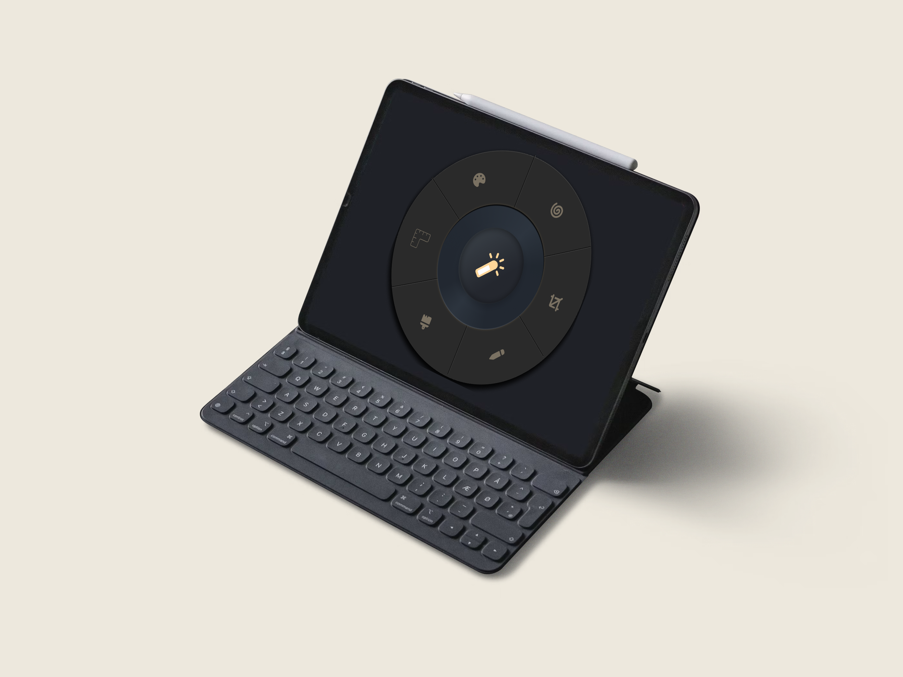

A Utility Dial
Axis
Recreated a Pinterest idea as a radial interaction system exploring contextual tool access through interaction and animation. Useful for creative software.
A collection of interface explorations, interaction concepts, game UI experiments and visual design systems.

Recreated a Pinterest idea as a radial interaction system exploring contextual tool access through interaction and animation. Useful for creative software.